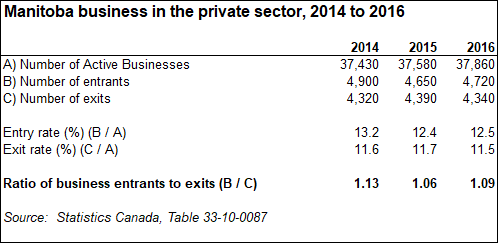

Transparent Reporting on Government's Progress
1.09 Ratio
Target: To ensure our business entrants exceeds exits for private sector on annual basis
On an annual basis, Manitoba has had more entrants than exits. In 2016, 4,720 private sector businesses entered into the Manitoba economy, while 4,340 exited, resulting in a ratio of 1.09 for 2016.

The measure is derived from Statistics Canada’s Longitudinal Employment Analysis Program (LEAP) database that contains annual employment information for each employer business in Canada, starting with the 1983 reference year. The information in LEAP is generated from the annual statements of remuneration paid (T4 slips) that Canadian businesses are required to issue to their employees for tax purposes. LEAP covers incorporated and unincorporated businesses that issue at least one T4 slip in any given calendar year. It excludes self-employed individuals or partnerships, where the participants do not draw salaries.
The ratio can be used as performance measurement for private sector business entrants, relative to exits in the province.
Historically, Manitoba has remained above 1.00 for private business entrants and exits. The target can be adjusted to be above the current ratio.